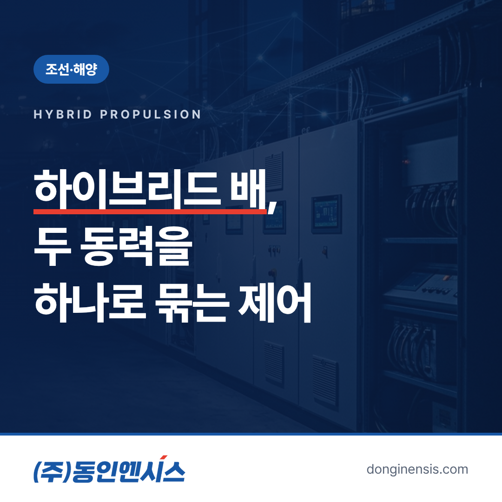
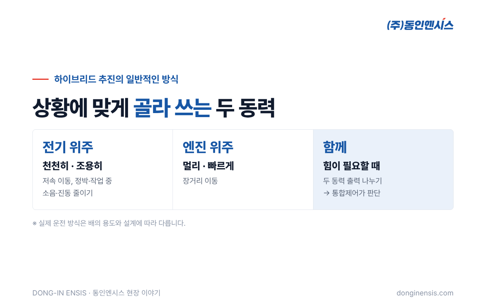
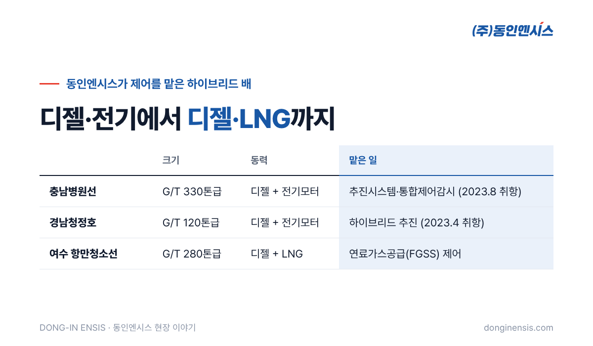

바다 위에도 하이브리드 자동차 같은 배가 있습니다. 엔진과 전기모터를 상황에 맞게 나눠 쓰는 하이브리드 추진 선박입니다. 이 글에서는 부산에서 1991년부터 산업·선박용 제어반을 만들어 온 동인엔시스가 직접 제어를 맡은 두 척, 충남병원선과 경남청정호를 바탕으로 하이브리드 추진 선박의 제어가 무엇을 하는지 쉽게 풀어 봅니다.
일반적인 배는 디젤엔진 하나로 프로펠러를 돌립니다. 하이브리드 추진 선박은 여기에 전기모터를 더해, 두 가지 동력을 상황에 맞게 골라 쓰거나 함께 씁니다.
자동차의 하이브리드와 비슷하게 생각하면 쉽습니다. 천천히 움직이거나 조용히 머물러야 할 때는 전기 쪽을, 먼 거리를 빠르게 이동할 때는 엔진 쪽을 주로 쓰고, 힘이 많이 필요할 때는 둘을 함께 쓰는 식입니다. 이렇게 하면 엔진을 늘 최대로 돌리지 않아도 되어 연료와 배출가스를 줄이고, 소음과 진동도 낮출 수 있습니다.
다만 이것은 일반적인 방식이고, 실제로 어떤 상황에서 어떤 동력을 쓸지는 배의 용도와 설계에 따라 달라집니다.

동력이 두 개라는 것은 그만큼 판단할 일이 많다는 뜻입니다. 하이브리드 추진 선박의 제어시스템은 대략 이런 일을 맡습니다.
동인엔시스가 충남병원선에 공급한 것도 바로 이 추진시스템과 통합제어감시입니다. 여러 장치를 따로따로가 아니라 배 전체를 하나로 보고 다루는 것이 핵심입니다.
두 배는 크기도, 하는 일도 다르지만 디젤과 전기를 함께 쓴다는 점은 같습니다.
충남병원선은 G/T 330톤급 배로, 디젤엔진과 전기모터를 함께 쓰는 하이브리드 추진 방식입니다. 2023년 8월 취항했습니다.
병원선은 병원에 가기 어려운 섬 지역 주민들을 찾아가 진료하는 배입니다. 진료실과 의료 장비를 싣고 다니는 배이니만큼, 항해 중에도 정박 중에도 안정적인 전력과 움직임이 중요합니다. 의료 장비가 돌아가는 동안 전기가 흔들리면 안 되고, 섬에 머무는 동안에는 소음과 진동이 적을수록 좋습니다. 하이브리드 추진과 통합제어가 이런 배에 잘 맞는 이유입니다.
Photorealistic photo of a mid-sized white government medical service ship cruising on calm blue sea near small green Korean islands on a sunny day, clean modern hull with a simple red stripe and a small red cross symbol without any text, gentle wake, wide angle maritime photography, no ship name, no readable text, no brand logos. 3:2 landscape.
경남청정호는 G/T 120톤급 환경정화선으로, 역시 디젤과 전기모터 하이브리드 방식입니다. 2023년 4월 취항했습니다.
환경정화선은 바다에 떠다니는 쓰레기를 거둬들이는 배입니다. 넓은 바다를 이동하는 시간도 있지만, 쓰레기를 모으는 동안에는 천천히, 섬세하게 움직여야 합니다. 바다를 깨끗하게 하는 배가 스스로 내뿜는 배출가스를 줄일 수 있다는 점에서도 하이브리드 방식은 의미가 있습니다.
두 배 모두 크기가 크지 않은 관공선입니다. 작은 배는 기관실 공간이 좁아 제어반을 놓을 자리도 넉넉하지 않습니다. 정해진 공간 안에 필요한 기능을 담고, 선원들이 한눈에 상태를 알아볼 수 있게 구성하는 것도 설계에서 공을 들인 부분입니다.
Photorealistic photo of a small marine environmental cleanup vessel with an open collection deck and a crane arm lifting a net of floating debris from calm harbor water in Korea, crew in orange life vests seen from a distance, coastal hills in the background, overcast soft light, no ship name, no readable text, no brand logos. 3:2 landscape.
이런 배에서 제어 화면은 선원과 기계 사이의 통역사입니다. 동력이 둘이다 보니 보여 줄 정보도 많아지는데, 다 늘어놓으면 오히려 중요한 것을 놓치게 됩니다. 그래서 화면을 구성할 때는 다음 순서로 정리합니다.
화면 하나를 정리하는 일이지만, 실제 항해에서 선원이 덜 헤매고 더 빨리 판단하게 만드는 것이 목표입니다.
하이브리드라고 해서 꼭 디젤과 전기의 조합만 있는 것은 아닙니다. 동인엔시스는 여수지방해양수산청 항만청소선(G/T 280톤급)처럼 디젤과 LNG 엔진을 함께 쓰는 배에서 연료가스공급 제어도 맡았습니다. 연료가 달라지면 공급 설비와 안전 조건이 달라지고, 제어가 챙겨야 할 것도 늘어납니다.
이렇게 서로 다른 동력원을 함께 다뤄 본 경험은 지금 참여하고 있는 수소추진선박 통합제어로 이어지고 있습니다. 동력원이 디젤이든 LNG든 수소 연료전지든, 여러 동력을 하나의 배로 엮는 일이라는 점은 같습니다.

두 척의 하이브리드 추진 선박을 거치며 다시 확인한 원칙이 있습니다. 동력이 여러 개일수록, 그 사이를 잇는 제어가 단순하고 분명해야 한다는 것입니다. 운전자가 화면을 보고 지금 배가 어떤 상태인지 바로 알 수 있어야 하고, 이상이 생겼을 때 어떤 순서로 대응할지 미리 정해져 있어야 합니다.
이 원칙은 육상 공장에 들어가는 지능형 제어반에도 그대로 이어집니다. 설비를 제어하면서 온도·전류·진동 같은 상태를 함께 기록하고, 이상이 생기면 먼저 알려 주는 구조입니다. 흔들리는 바다 위에서 다듬어진 기준이 공장 설비 데이터의 믿음을 받쳐 줍니다. 동인엔시스는 이런 선박 경험을 인정받아 2022년 해양수산부 국가대표 혁신기업으로도 선정됐습니다.
Q. 큰 상선에도 하이브리드 제어를 할 수 있나요? 배의 크기와 동력 구성에 따라 검토할 내용이 달라집니다. 대형 선박에서는 연료가스공급 계통의 펌프·히터 제어 등을 수행해 왔고, 요구사항을 보고 함께 판단합니다.
Q. 기존 배를 하이브리드로 바꾸는 것도 가능한가요? 개조는 선체와 기관실 여건, 선급 규칙을 함께 봐야 해서 조선소·설계사와 협의가 필요합니다. 제어 쪽 검토는 함께할 수 있습니다.
Q. 선박 제어반도 부산에서 만드나요? 네. 부산 본사와 양산·기장 공장에서 설계·제작하고, 선박별 도면 승인과 검사관 입회 시험을 거쳐 납품합니다.
하이브리드 추진 선박은 두 동력을 상황에 맞게 쓰는 배이고, 그 판단을 맡는 것이 통합제어입니다. 충남병원선과 경남청정호는 그 제어가 실제 바다에서 쓰이고 있는 사례입니다.
관공선이나 친환경 선박의 제어를 준비하고 계신다면 홈페이지 조선·해양 분야를 살펴보시고 연락 주세요.
선박 제어 상담 051-862-3668 / dongin@donginmne.com
아래 질문 중 하나에 실제 경험으로 답해 본문 적당한 곳에 넣어 주세요. 사람이 직접 쓴 문장이 들어가면 네이버에서 저품질 위험이 줄고 노출에 도움이 됩니다.